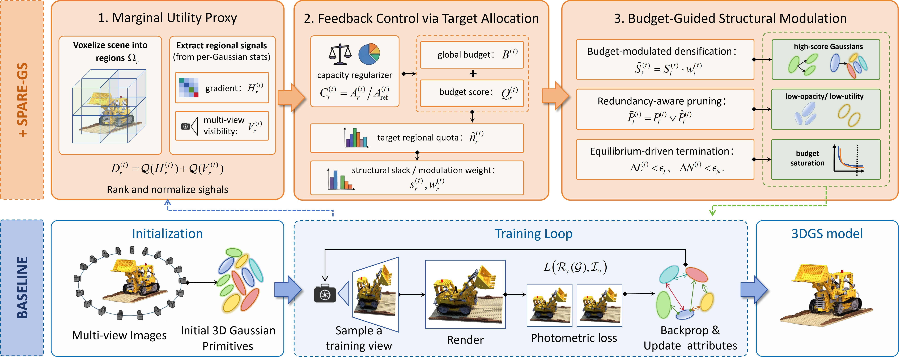
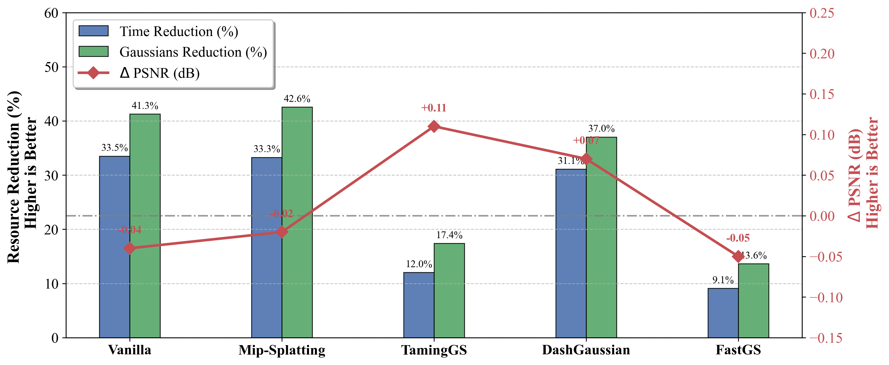
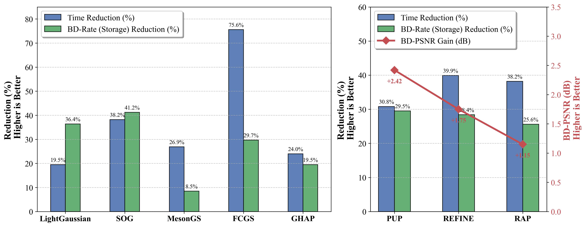

Overview of the SPARE-GS framework. To achieve global budgeted-constrained optimization, our method establishes a Marginal Utility Proxy via scene voxelization. We utilize Feedback Control via Target Allocation to dynamically compute regional quotas, and apply Budget-Guided Structural Modulation to guide densification, redundancy pruning, and termination. The standard pipeline is controlled and evaluated by our proposed modules.
3D Gaussian Splatting (3DGS) achieves high-fidelity novel view synthesis in real-time; however its training efficiency and representation compactness are hindered by excessive primitive proliferation. To address this challenge, we formulate the structural evolution of 3DGS as a global budget-constrained optimization problem and derive an optimality condition, which requires the marginal utility of structural resources to be balanced across spatial regions under a finite primitive budget. Based on this formulation, we propose SPARE-GS, a general plug-and-play framework that dynamically aligns the distribution of 3D Gaussian primitives with regional representational demand.
SPARE-GS estimates capacity-normalized regional demand, assigns adaptive target quotas, and uses regional budget deviations to coordinate densification, pruning and adaptive termination toward a more balanced structural allocation. Extensive experiments across standard, accelerated, and structure-enhanced 3DGS pipelines demonstrate that SPARE-GS reduces the Gaussian count and training time by an average of 32.60% and 24.84%, respectively, while improving the average PSNR. Moreover, the resulting compact representations reduce downstream processing time and improve the rate-distortion performance of diverse compression and pruning methods, demonstrating the broad applicability of global structural budget regulation.


Performance gains of incorporating SPARE-GS. (a) Training: across diverse 3DGS pipelines, SPARE-GS reduces training time and Gaussian counts without sacrificing rendering quality. (b) Post-Processing: this compact representation benefits downstream tasks, delivering substantial storage and latency savings for various compression and pruning frameworks.
@article{chen2026sparegs,
author = {Zhang Chen and Shuai Wan and Fuzheng Yang and Jiazhi Xia and Weiyao Lin and Junhui Hou},
title = {SPARE-GS: Structural Parsimony and Resource Efficiency for 3D Gaussian Splatting},
year = {2026},
}